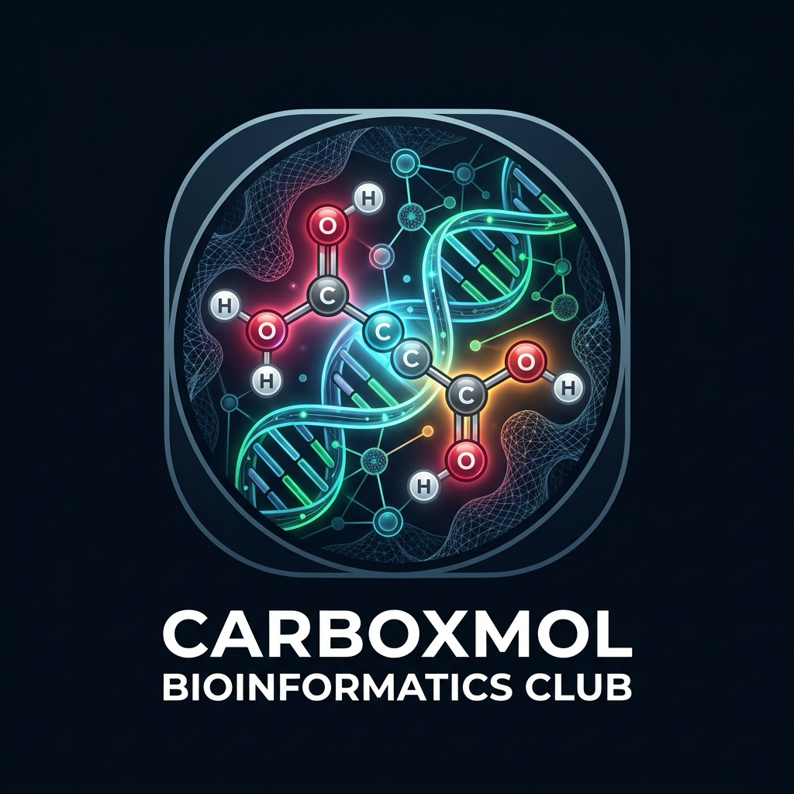

CarboxMol Bioinformatika Klubu Qərbi Kaspi UniversitetiAzərbaycanda Tələbə Bioinformatika Ekosisteminin Yaradılması və 3D Molekulyar Modelləşdirmə
Genetik ardıcıllıq (A, T, G, C) zülalın yalnız ilkin kodudur. Funksiya və xəstəlik mexanizmləri onun 3D fəza konformasiyasında gizlənir.
Süni intellekt və dərin öyrənmə 50 illik zülal qatlanması problemini həll edərək 200+ milyon zülalın strukturunu tədqiqatçılara təqdim etdi.
Hədəfə yönəlmiş dərman molekullarının dizaynı, karsinogenez və genetik mutasiyaların təhlili yalnız hesablama metodları ilə mümkündür.
Kristalloqrafik strukturlarda fermentlərin aktiv mərkəzləri çox zaman metal ionları və karboksil qrupları (Aspartat, Qlutamat) vasitəsilə tənzimlənir.
Mövcud standart vizualizatorlar ümumi görünüş verir, lakin karboksil oksigenləri ilə qonşu atomlar arasındakı məsafə, bucaq və koordinasiya triadalarını avtomatik həndəsi metrikayla süzgəcdən keçirmir.
Bu ehtiyac bizi həm riyazi hesablama aparan Carbox mühərrikini, həm də interaktiv 3D mühit olan CarboxMol-u yaratmağa sövq etdi.
Minlərlə zülal atomu içərisindən yalnız karboksil koordinasiyası formalaşdıran aktiv triadaları riyazi məsafə və bucaq matrisləri ilə dərhal müəyyən edir.
X-ray kristallografiya və Cryo-EM eksperimentlərindən əldə olunmuş atomik koordinatların keyfiyyət və həndəsi konformasiyasını təsdiqləyir.
Alimlər və tələbələr üçün struktur analitikasını cədvəl, vektor və həndəsi qrafiklər formatında eksport etmək imkanı təqdim edir.
Heç bir ağır proqram quraşdırmadan, birbaşa veb-brauzerdə işləyən WebGL qrafik mühərriki.
Ribbon, Cartoon, Stick, Sphere və elektrostatik səth (Surface) rejimləri arasında anında keçid.
RCSB PDB və AlphaFold bazalarından 4 hərfli kod və ya UniProt ID ilə strukturların canlı çəkilməsi.
Tələbə üçün ən böyük maneə çətin quraşdırılan proqramlar və lisenziyalardır. CarboxMol bu baryeri sıfıra endirərək zülal analizini hər bir tələbənin brauzerinə gətirir.
Tədqiqat alətlərini tələbə hərəkatına çevirmək: Azərbaycanda ilk ixtisaslaşmış tələbə bioinformatika birliyi.
Klubumuzun nizamnaməsi və tədris fəaliyyət proqramı Qərbi Kaspi Universiteti tərəfindən rəsmi olaraq təsdiqləndi. Bu, təşəbbüsümüzün universitet səviyyəsində institusional dəstək qazanmasının ən böyük sübutudur.
Yüksək Texnologiyalar və Təbiət Elmləri Məktəbi bazasında innovativ tədris və tədqiqat platforması.
Ümumi elmi strategiya, beynəlxalq əlaqələr, rəsmi akkreditasiyalar, alətlərin inkişafı və tələbə qəbullarının rəsmi təsdiqi.
BioMeet seminarlarının cədvəli, Journal Club müzakirələri, mentorlarla əlaqə və tələbələrin laboratoriya tapşırıqlarının izlənməsi.
Elmi afişa və posterlərin vizual tərtibatı, LinkedIn/Instagram kanallarının idarəsi, universitetlərarası tələbə kommunikasiyası.
MIT, OpenStax, Oregon State, Penn State və VU Amsterdam-ın pulsuz CC BY lisenziyalı birbaşa PDF dərslikləri istifadə olunur.
Bioinformatika üzrə Azərbaycan dilində fundamental dərslik olmadığı üçün Genetika və Biokimya üzrə real universitet PDF-ləri (BDU/ADAU/SDU) istifadə olunur.
Cambridge Universiteti MRC LMB (Prof. Qərib Mürşüdov), Oxford və Kembric alimləri ilə açıq onlayn seminarlar və mentorluq formatı.
ETN Molekulyar Biologiya və Biotexnologiyalar İnstitutu (IMB), Genetik Ehtiyatlar İnstitutu və Biofizika İnstitutu ilə elmi inteqrasiya.
WCU-dan sonra BDU, ATU, Xəzər, ADA və digər universitetlərin tələbələrini bir araya gətirən Ümumrespublika Tələbə Şəbəkəsinin formalaşdırılması.
Tələbələr yalnız dərslik oxumur; öz fərdi tələbə kabinetində Python skriptləri yazır, Z-score analizləri aparır, 3D zülal-liqand qarşılıqlı təsirlərini vizual tədqiq edir.
Məqsədimiz tələbələrimizi beynəlxalq hakatonlara, magistratura və doktorantura proqramlarına güclü praktiki portfoliolarla hazırlamaqdır.
Suallarınızı, təkliflərinizi və əməkdaşlıq fikirlərinizi dinləməkdən məmnun olaram.